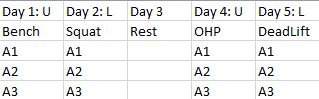

Weightlifting
If you're probably on this page, you either made it to the end of my website and/or interested in weightlifting. Let's get straight to the point. Below is a picture of chart that estimates muscle gain by Alan Aragon (MS, Nutrition). Of course everyone is different, so your muscle gain might be less or more depending on genetics. However, the exact same can be said for everyone; linear progression does not continue forever. Our bodies cannot progress the same 10 years into training compared to just starting. For someone just starting out, I suggest to always eat at a caloric surplus to maximize your newbie gains.
Upper/Lower Split

The upper lower split consists of splitting the week into 2 sets of pairs with a rest day in between.
Each pair has a upper day and a lower day. Each day consists of the main lift then three supplementary accessories.
You can add more or less accessories depending on your preference.
By splitting the exercises into pairs, you are able to give the part of the body you're not training a rest.
PPL Split
The push pull legs split conists of 3 days, with each day corresponding to each letter of PPL. Each day has the main lift then three supplementary accessories. You can sub OHP as an accessory of push day if you would like to train shoulders.
My Split
This is my training split. Because Olympic weightlifting is dependent on the legs much more than the back, I must train legs alot more than other body parts. I will also deadlift once a week and will only max out on that day. If my squat goes up, my deadlift will as well since the squat trains the same body parts as the deadlift.
Rep Scheme
Here are some rep schemes. The first number represents the number of sets and second number represents number of reps. For the main lift, many people use 5x5 as it combines a bit of strength and hypertrophy work. But because progression is not linear, you should use schemes that employ less sets and less reps. This helps your body adapt to recruiting as many active motor units as it can and increasing firing rate of individual motor units. Accessories should be 3x10 or any sets of high reps to help build supporting muscle around the body part. It helps correct muscle imbalances to stay injury free. There can be modifiers to rep schemes. One of these is AMRAP or as many reps as possible. You would perform the sets, but the last set becomes an AMRAP. This can be used to gauge progress. If your AMRAP is higher than a certain number, then it means you are strong enough to add 5 more pounds. The other modifer is a + 1. This is just one rep, usually a one rep max to test maxes. The rep scheme I use is test 1RM then regular 3x3 but last set is AMRAP. If I get more then 5 or more reps on the AMRAP, then I increase the weight by 5 pounds next time.
Accessories
Here are some of my favourite accessories that I use in my training. You do not have to use these accessories as these are what I find most effective for me.
Art